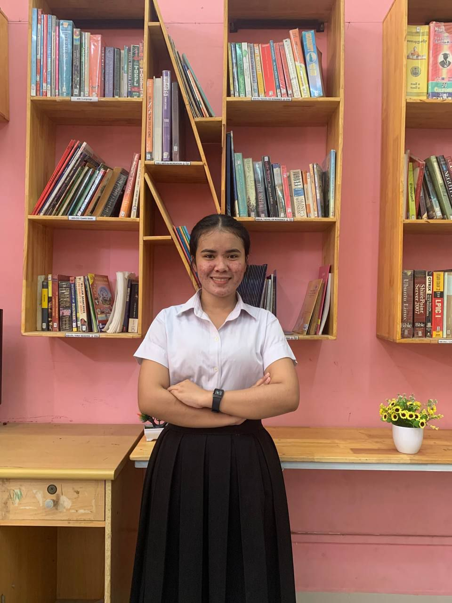

About Me
Building thoughtful web experiences with care.
I am a web development student at Passerelles Numeriques Cambodia, preparing for a web development internship. My CV highlights hands-on practice with HTML, CSS, JavaScript, Node.js, MySQL, Git, Docker, AWS, and Postman.
I am a quick learner and strong team player who enjoys solving real problems, improving small details, and writing clean, maintainable code.
